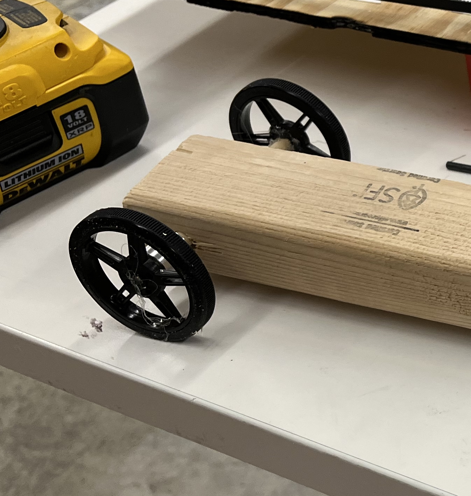
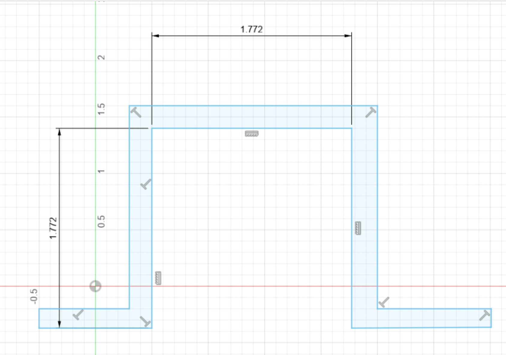
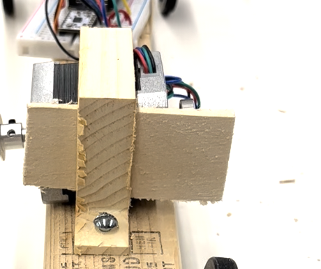
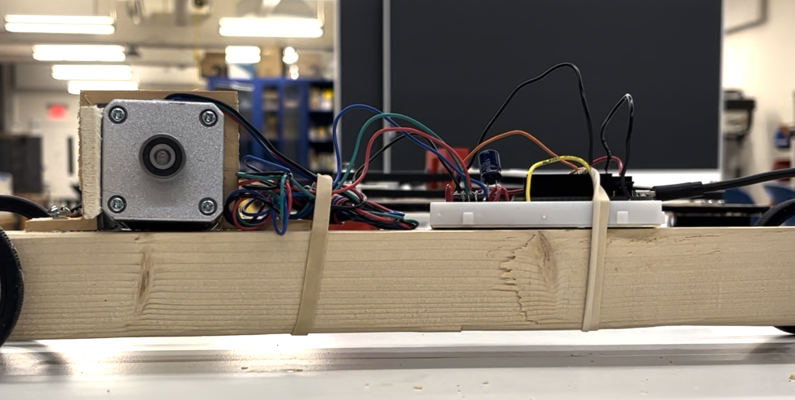
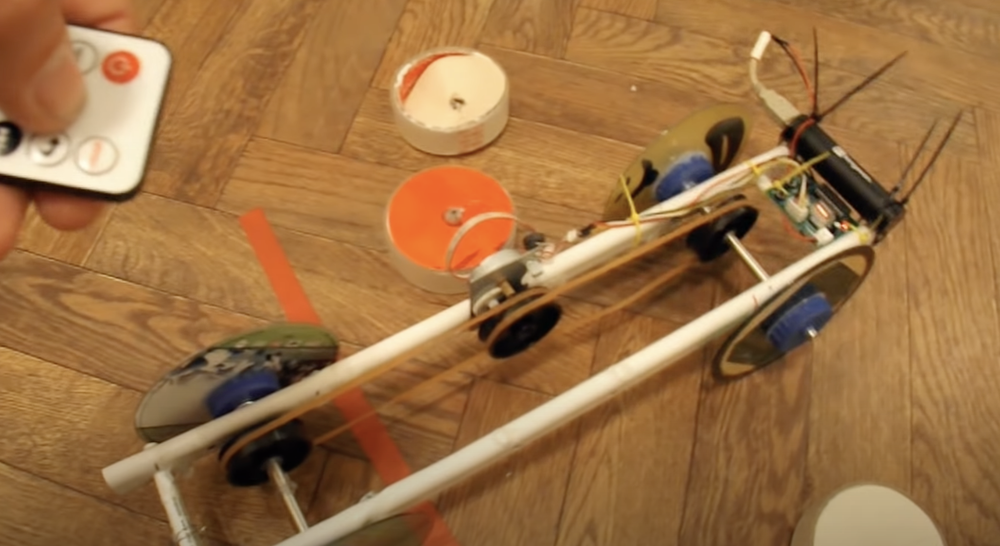
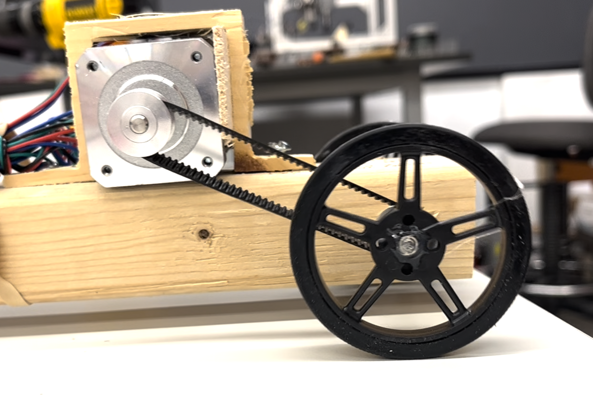

# final result
# ---------------------------------
vertical view:

lateral view:

/week nine: machines
# concept
# ---------------------------------
coming up with an idea was probably one of the most time consuming parts of this week's assignment. i toyed around with doing some sort of useless box, but i ultimately settled on making some sort of car!
i think my dream version of a stepper motor-powered car would contain some sort of wireless remote-control mechanism, as well as (again, ideal version) some sort of wireless camera (sort of like this).
for now, however, i focused first on getting the car to move.
# build
# ---------------------------------
i grabbed a block of wood and drilled two holes through either side of the wood — slightly larger than the two dowels that i was using as tire axles. i then put the axles through the holes and attached the wheels to either end using the small screw that came with the wheels.
i then had to make some sort of bracket that could secure the stepper motor to the top of the car rigidly enough for it to maintain tension between it and the axles. i decided to use the shopbot to mill a small bracket piece
i then screwed the bracket onto the car, put the motor inside, and used a wood shim to make it fit snugly

i then used rubber bands to secure the breadboard and excess wires.
the next (and most difficult) step was connecting the motor to the tire axis. my original plan was to use rubber bands, like in this example that i found:
this did not work particularly well, likely because the circumference of the axles (i.e. the amount of surface area the rubber band has to grip onto the axle and exert torque) was smaller in my car than in this video example
i instead decided to use the timing bands. because the only closed loop timing band i could find was fairly small, i had to move the motor to the back side of the car, and was only able to connect it to one of the two axles.

# code
# ---------------------------------
using the AccelStepper library, i adapted the bounce example to 1) accelerate faster and reach a faster max speed and 2) increase the distance before changing direction to be the exact width of the tables in the room.
this was the code that I used:
#includeconst int stepPin = 13; const int dirPin = 12; AccelStepper stepper (1, stepPin, dirPin); void setup() { stepper.setMaxSpeed(1000); stepper.setAcceleration(200); stepper.moveTo(700); } void loop() { if (stepper.distanceToGo() == 0) stepper.moveTo(-stepper.currentPosition()); stepper.run(); }
# final result
# ---------------------------------
vertical view:
lateral view: